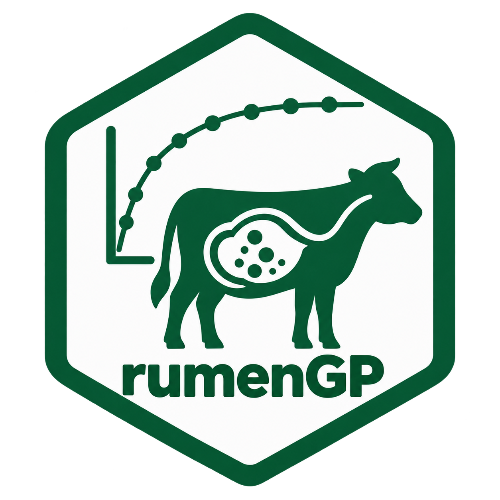
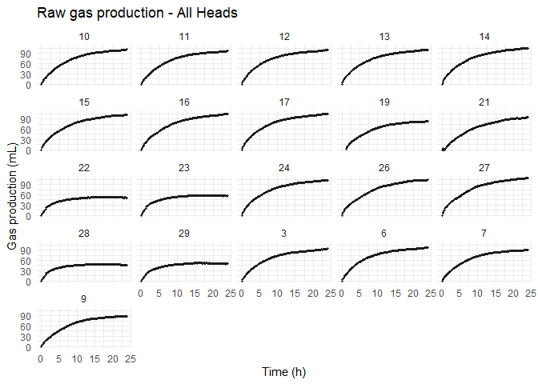

rumenGP is an R package for importing, processing, visualizing, fitting, comparing, and interpreting in vitro rumen gas production data.
The package supports:
- ANKOM RF datasets
- Manually collected gas-volume datasets
- Pressure-based datasets (PSI or kPa)
- Fifteen built-in kinetic models
- User-defined kinetic models
- Model comparison and ranking
- Treatment-level model evaluation
- Diagnostic and visualization tools
Installation
Development version:
# install.packages("devtools")
devtools::install_github(
"araujorodrig-lab/rumenGP"
)Or install from a local source:
devtools::install_local(
"path/to/rumenGP"
)Example Workflow: ANKOM Data
Load and Import Example Data
The package includes a small example dataset that can be used to learn the workflow and test package functionality.
files <- example_data()
raw_data <- read_ankom(
files$ankom
)
metadata <- read_metadata(
files$metadata
)Inspect ANKOM Data
The ANKOM RF file contains pressure measurements collected during the incubation period.
head(raw_data)
#> # A tibble: 6 × 52
#> time_raw `0` `1` `2` `3` `4` `5` `6` `7` `8` `9` `10`
#> <chr> <dbl> <dbl> <dbl> <dbl> <dbl> <lgl> <dbl> <dbl> <dbl> <dbl> <dbl>
#> 1 10:54:01 14.1 0 0 0 0 NA 0 0 0 0 0
#> 2 11:04:01 14.1 0.109 0 0.291 0.364 NA 0.255 0.218 0 0.291 0.291
#> 3 11:14:01 14.1 0.146 0.0364 0.546 0.655 NA 0.509 0.437 0 0.509 0.546
#> 4 11:24:01 14.1 0.109 0.0364 0.764 0.983 NA 0.728 0.655 0 0.728 0.837
#> 5 11:34:01 14.1 0.109 0.0364 0.946 1.24 NA 0.983 0.801 0 0.910 1.02
#> 6 11:44:01 14.1 0.109 0.0364 1.09 1.46 NA 1.16 0.983 0 1.06 1.20
#> # ℹ 40 more variables: `11` <dbl>, `12` <dbl>, `13` <dbl>, `14` <dbl>,
#> # `15` <dbl>, `16` <dbl>, `17` <dbl>, `18` <dbl>, `19` <dbl>, `20` <dbl>,
#> # `21` <dbl>, `22` <dbl>, `23` <dbl>, `24` <dbl>, `25` <lgl>, `26` <dbl>,
#> # `27` <dbl>, `28` <dbl>, `29` <dbl>, `30` <lgl>, `31` <lgl>, `32` <lgl>,
#> # `33` <lgl>, `34` <lgl>, `35` <lgl>, `36` <lgl>, `37` <lgl>, `38` <lgl>,
#> # `39` <lgl>, `40` <lgl>, `41` <lgl>, `42` <lgl>, `43` <lgl>, `44` <lgl>,
#> # `45` <lgl>, `46` <lgl>, `47` <lgl>, `48` <lgl>, `49` <lgl>, `50` <lgl>Inspect Metadata
The metadata table contains bottle identifiers, treatments, and replicate information.
head(metadata)
#> # A tibble: 6 × 4
#> Bottle Head Rep Treatment
#> <dbl> <dbl> <dbl> <chr>
#> 1 1 1 1 TMR
#> 2 2 2 1 Blank
#> 3 3 3 2 TMR
#> 4 4 4 3 TMR
#> 5 6 6 4 TMR
#> 6 7 7 5 TMRValidate metadata
metadata <- validate_metadata(
metadata
)
#> Metadata validation passed.
#> Heads: 25
#> Treatment: 5Process ANKOM Data
Standard processing:
gp <- process_ankom(
raw_data,
metadata,
headspace_ml = 210,
temperature_c = 39,
zero_negative_pressure = TRUE
)Optional blank correction:
gp_blank_corrected <- process_ankom(
raw_data,
metadata,
headspace_ml = 210,
temperature_c = 39,
zero_negative_pressure = TRUE,
blank_correction = "subtract_mean"
)When blank correction is enabled, the mean gas production of bottles labeled "Blank" is subtracted from all nonblank bottles at each observation time.
Validate processed data
gp <- validate_ankom(
gp
)
#> rumenGP data validation passed.
#> Observations: 3618
#> Heads: 25
#> Treatments: 5
gp_blank_corrected <- validate_ankom(
gp_blank_corrected
)
#> rumenGP data validation passed.
#> Observations: 3618
#> Heads: 25
#> Treatments: 5Blank Correction
Blank correction is optional because laboratories may follow different preprocessing protocols. By default, rumenGP retains the original gas-production values.
When blank_correction = "subtract_mean" is used, the mean gas production of blank bottles is subtracted from all nonblank bottles before model fitting. Negative gas values generated by the correction are truncated to zero by default.
Example Workflow: Manual Gas Volume Data
manual_volume <- data.frame(
Bottle = c(
1,1,1,
2,2,2
),
Treatment = c(
"Control","Control","Control",
"Corn","Corn","Corn"
),
Time = c(
0,4,8,
0,4,8
),
Gas = c(
0,20,40,
0,35,60
)
)
gp_manual <- as_rumen_gp(
data = manual_volume,
head_col = "Bottle",
treatment_col = "Treatment",
time_col = "Time",
gas_col = "Gas"
)
head(gp_manual)
#> Head Bottle Rep Treatment Time_h Gas_mL
#> 1 1 1 1 Control 0 0
#> 2 1 1 1 Control 4 20
#> 3 1 1 1 Control 8 40
#> 4 2 2 1 Corn 0 0
#> 5 2 2 1 Corn 4 35
#> 6 2 2 1 Corn 8 60Example Workflow: Pressure Data
manual_pressure <- data.frame(
Bottle = rep(
1,
10
),
Time = c(
0,2,4,6,8,
12,16,24,36,48
),
PSI = c(
0,
0.2,
0.5,
0.8,
1.2,
1.8,
2.5,
3.2,
4.0,
4.5
)
)
gp_pressure <- as_rumen_gp(
data = manual_pressure,
head_col = "Bottle",
time_col = "Time",
pressure_col = "PSI",
pressure_unit = "psi",
headspace_volume = 60
)
head(gp_pressure)
#> Head Bottle Rep Treatment Time_h Gas_mL
#> 1 1 1 1 Unknown 0 0.0000000
#> 2 1 1 1 Unknown 2 0.7140855
#> 3 1 1 1 Unknown 4 1.7852138
#> 4 1 1 1 Unknown 6 2.8563421
#> 5 1 1 1 Unknown 8 4.2845132
#> 6 1 1 1 Unknown 12 6.4267698Pressure measurements are automatically converted to gas volume using the same conversion framework used by process_ankom().
Remove Abnormal heads
gp_clean <- exclude_heads(
gp,
heads = c(
"1",
"2",
"4",
"20"
),
reason = c(
"Abnormal gas profile",
"Abnormal gas profile",
"Abnormal gas profile",
"Abnormal gas profile"
)
)
plot_gp(
gp_clean
)
Model Fitting
groot_fit <- fit_groot(gp_clean)
#> rumenGP data validation passed.
#> Observations: 3038
#> Heads: 21
#> Treatments: 5
brody_fit <- fit_brody(gp_clean)
#> rumenGP data validation passed.
#> Observations: 3038
#> Heads: 21
#> Treatments: 5
gompertz_fit <- fit_gompertz(gp_clean)
#> rumenGP data validation passed.
#> Observations: 3038
#> Heads: 21
#> Treatments: 5Model summaries
summary(groot_fit)
#>
#> Groot model summary
#> -------------------
#> Total bottles: 21
#> Successful fits: 21
#> Failed fits: 0
#> Low R-squared (< 0.90): 0Compare Models
comparison <- compare_models(
Groot = fit_groot(gp_clean),
Brody = fit_brody(gp_clean),
Gompertz = fit_gompertz(gp_clean)
)
#> rumenGP data validation passed.
#> Observations: 3038
#> Heads: 21
#> Treatments: 5
#> rumenGP data validation passed.
#> Observations: 3038
#> Heads: 21
#> Treatments: 5
#> rumenGP data validation passed.
#> Observations: 3038
#> Heads: 21
#> Treatments: 5
comparison
#> Model Bottles Successful_Fits Failed_Fits Mean_R2 Mean_RMSE Mean_RSS
#> 1 Groot 21 21 0 0.9967371 0.9955345 150.1038
#> 2 Brody 21 21 0 0.9969746 0.9479644 144.1933
#> 3 Gompertz 21 21 0 0.9725272 3.4607979 1848.1946
#> Mean_AIC Mean_BIC Lambda_Boundary
#> 1 406.9209 418.7920 0
#> 2 386.1759 398.0734 0
#> 3 767.6180 779.5156 21Rank Models
rank_models(
comparison
)
#> Model Bottles Successful_Fits Failed_Fits Mean_R2 Mean_RMSE Mean_RSS
#> 1 Groot 21 21 0 0.9967371 0.9955345 150.1038
#> 2 Brody 21 21 0 0.9969746 0.9479644 144.1933
#> 3 Gompertz 21 21 0 0.9725272 3.4607979 1848.1946
#> Mean_AIC Mean_BIC Lambda_Boundary Rank_R2 Rank_RMSE Rank_AIC Rank_BIC
#> 1 406.9209 418.7920 0 2 2 2 2
#> 2 386.1759 398.0734 0 1 1 1 1
#> 3 767.6180 779.5156 21 3 3 3 3Treatment-Level Comparison
treatment_comparison <-
compare_models_by_treatment(
Groot = fit_groot(gp_clean),
Brody = fit_brody(gp_clean),
Gompertz = fit_gompertz(gp_clean)
)
#> rumenGP data validation passed.
#> Observations: 3038
#> Heads: 21
#> Treatments: 5
#> rumenGP data validation passed.
#> Observations: 3038
#> Heads: 21
#> Treatments: 5
#> rumenGP data validation passed.
#> Observations: 3038
#> Heads: 21
#> Treatments: 5
ranked_treatments <-
rank_models_by_treatment(
treatment_comparison
)
best_model_by_treatment(
ranked_treatments
)
#> # A tibble: 5 × 12
#> Treatment Model Mean_R2 Mean_RMSE Mean_AIC Mean_BIC Rank_R2 Rank_RMSE Rank_AIC
#> <chr> <chr> <dbl> <dbl> <dbl> <dbl> <int> <int> <int>
#> 1 Blank Groot 0.990 1.04 426. 438. 2 1 1
#> 2 High Brody 0.998 1.17 457. 469. 1 1 1
#> 3 Low Brody 0.998 0.870 340. 352. 1 1 1
#> 4 Medium Groot 0.999 0.864 369. 380. 1 1 1
#> 5 TMR Brody 0.999 0.582 256. 268. 1 1 1
#> # ℹ 3 more variables: Rank_BIC <int>, Total_Rank <int>, Overall_Rank <int>User-Defined Models
Researchers can fit their own kinetic equations using fit_custom().
custom_fit <- fit_custom(
data = gp_clean,
formula =
Gas_mL ~
A *
(
Time_h /
(
Time_h + K
)
),
start = list(
A = 150,
K = 10
),
lower = c(
A = 0,
K = 0
),
model_name = "Hyperbolic"
)
#> rumenGP data validation passed.
#> Observations: 3038
#> Heads: 21
#> Treatments: 5
summary(custom_fit)
#>
#> Custom model summary
#> --------------------
#> Model name: Hyperbolic
#>
#> Formula:
#> Gas_mL ~ A * (Time_h/(Time_h + K))
#>
#> Total bottles: 21
#> Successful fits: 21
#> Failed fits: 0
#> Mean R-squared: 0.9951
#> Mean RMSE: 1.2661
#> Mean AIC: 467.6569
#> Mean BIC: 476.5801Compare custom and built-in models:
compare_models(
Groot = fit_groot(gp_clean),
Brody = fit_brody(gp_clean),
Hyperbolic = custom_fit
)
#> rumenGP data validation passed.
#> Observations: 3038
#> Heads: 21
#> Treatments: 5
#> rumenGP data validation passed.
#> Observations: 3038
#> Heads: 21
#> Treatments: 5
#> Model Bottles Successful_Fits Failed_Fits Mean_R2 Mean_RMSE Mean_RSS
#> 1 Groot 21 21 0 0.9967371 0.9955345 150.1038
#> 2 Brody 21 21 0 0.9969746 0.9479644 144.1933
#> 3 Hyperbolic 21 21 0 0.9950893 1.2660681 260.8922
#> Mean_AIC Mean_BIC Lambda_Boundary
#> 1 406.9209 418.7920 0
#> 2 386.1759 398.0734 0
#> 3 467.6569 476.5801 0Visualization
Raw gas production
plot_gp(
gp_clean,
head = "6"
)Plot model fit
plot_fit(
groot_fit,
head = "6"
)Plot residuals
plot_residuals(
groot_fit,
head = "6"
)Quality Control Workflow
Import data
↓
Validate metadata
↓
Create rumen_gp object
↓
Fit models
↓
Flag problematic bottles
↓
Inspect residuals
↓
Document exclusions
↓
Refit models
↓
Compare modelsImplemented Models
Built-in Models
- Brody
- Burr XII
- Dual Logistic
- EXP0
- EXPL
- Generalized Michaelis-Menten
- Gompertz
- Groot
- Inverse Paralogistic
- LE0
- LEL
- Logistic
- Log-logistic
- Mitscherlich
- Ørskov and McDonald
Model Equivalence
Several model formulations included in rumenGP are mathematically equivalent and are provided because different scientific disciplines and publications prefer different parameterizations.
Groot ↔︎ Generalized Michaelis-Menten
The Groot model
is mathematically equivalent to the generalized Michaelis-Menten model
for positive values of time.
Parameter correspondence:
- VF = A
- b = K
- k = c
Both formulations describe the same underlying sigmoidal gas production curve but differ in parameterization.
Note: The Groot formulation contains the term (b/t)^k and is therefore undefined at t = 0. Consequently, observations collected at Time_h = 0 are excluded when fitting the Groot model.
Researchers may choose either formulation according to the terminology commonly used in their field.
Groot ↔︎ Generalized Michaelis-Menten ↔︎ Log-logistic
The Log-logistic model
can be rewritten as
which is mathematically equivalent to both the Groot and generalized Michaelis-Menten formulations for positive values of time.
Parameter correspondence:
| Groot | Generalized Michaelis-Menten | Log-logistic |
|---|---|---|
| VF | A | VF |
| b | K | 1/r |
| k | c | a |
These formulations describe the same underlying gas production curve and differ only in parameterization.
Unlike the Groot model, the generalized Michaelis-Menten and Log-logistic formulations are mathematically defined at t = 0 and therefore retain the initial observation during model fitting. Consequently, parameter estimates and goodness-of-fit statistics may differ slightly among parameterizations when time-zero observations are present.
rumenGP implements all three parameterizations, allowing researchers to choose the formulation that is most familiar within their field while recognizing their underlying mathematical equivalence.
Recent Model Additions
Burr XII
Equation:
Parameters:
- VF: asymptotic gas production
- r: rate parameter
- a: shape parameter
- p: shape parameter
Advantages:
- Highly flexible sigmoidal behavior
- Accommodates diverse fermentation profiles
- Often provides strong goodness-of-fit
- Useful for comparative model evaluation
Limitations:
- Four-parameter model
- Greater risk of overfitting than simpler models
- Parameter interpretation may be less intuitive
Inverse Paralogistic
Equation:
Parameters:
- VF: asymptotic gas production
- r: rate parameter
- a: shape parameter
Advantages:
- Flexible sigmoidal behavior
- Biologically meaningful asymptote
- Performs well across diverse curve shapes
Limitations:
- Shape parameter may be difficult to interpret
- Requires positive incubation times
- Less commonly used than traditional rumen models
Neither Burr XII nor Inverse Paralogistic should be regarded as universally superior.
Model performance depends on feed type, experimental design, data quality, and the model-selection criteria used.
Recommended Model Selection Workflow
No single gas production model is expected to perform best for every dataset.
A recommended workflow is:
- Fit several biologically plausible models.
- Verify model convergence.
- Inspect fitted curves visually.
- Examine residual patterns.
- Compare RMSE, AIC, and BIC.
- Evaluate parameter plausibility.
- Select the model most appropriate for the research objective.
Published comparative work has reported strong performance for Burr XII, Inverse Paralogistic, and Log-logistic formulations across diverse feed datasets.
Because the Log-logistic formulation is mathematically equivalent to both Groot and generalized Michaelis-Menten models, rumenGP already provides this curve family through those existing parameterizations.
Major Features
Modeling
- 15 built-in kinetic models
- Burr XII
- Inverse Paralogistic
fit_custom()
Model Comparison
compare_models()rank_models()compare_models_by_treatment()rank_models_by_treatment()best_model_by_treatment()model_win_frequency()
Completed
- ✅ ANKOM RF workflow
- ✅ Generic data import
- ✅ Pressure-based workflows
- ✅ Fifteen kinetic models
- ✅ Burr XII model
- ✅ Inverse Paralogistic model
- ✅ Custom model framework
- ✅ Model comparison framework
- ✅ Treatment-level model ranking
- ✅ Model-equivalence documentation
- ✅ Diagnostic workflows
- ✅ Visualization tools
- ✅ Five package vignettes
- ✅ pkgdown website
- ✅ Clean R CMD check
Development Status
rumenGP is currently maintained and developed as an open-source framework for rumen gas production analysis.
Current releases support:
- ANKOM RF workflows
- Manual gas production workflows
- Pressure-based workflows
- Fifteen nonlinear gas production models
- User-defined kinetic models
- Model comparison and ranking
- Treatment-level evaluation
- Visualization and diagnostics
Future releases may include additional reporting, model-evaluation, and statistical workflows.